001 — Interactive Engineering Platform
=======001 — Engineering / Web
>>>>>>> 4da254456433939a9b03ea6092ea835ae5d26776
BSE Electronic
Obstruction Light
Platform
Traditional industrial catalogs and PDFs often fail to clearly explain complex technical systems. This project was designed to improve technical communication through real-time 3D visualization, interactive systems, and user-focused technical UX.
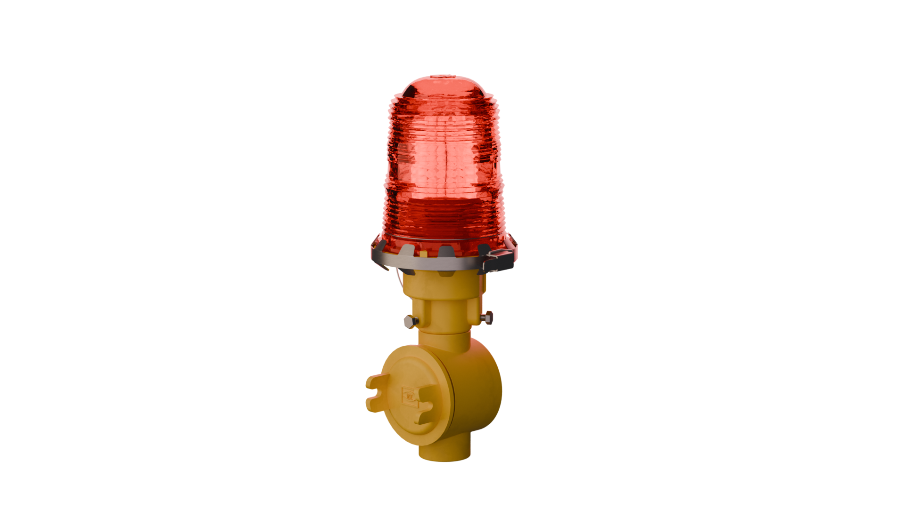
Overview
BSE Electronic manufactures aviation obstruction lighting systems used across Thailand. The challenge was not only product quality, but how to explain complex technical systems clearly on a website.
This project focused on rebuilding the product presentation through 3D visualization, interactive product systems, technical UX design, and automated product selection tools.
My Role
- 3D Product Modeling in Blender
- GLB Export & Web Optimization
- Real-time 3D Viewer Integration
- Product Selector Tool Logic
- Full UX/UI Design
- Technical Content Writing
- ICAO / FAA Compliance Documentation
- Wix CMS Implementation
The Challenge
Most customers had never seen an aviation obstruction lighting system before. Trying to explain FAA/ICAO regulations, installation positions, control systems, and product differences through PDF files created confusion.
The old website made the products feel more complicated than they actually were.
The Outcome
- Real-time 3D product exploration
- Faster product understanding
- Improved mobile accessibility
- Interactive product selection tools
- Better communication between engineers and customers
Performance / Analytics
Performance & Metrics
Real website analytics were used to evaluate how the new product experience improved traffic, engagement, and user interaction.
Google Search Traffic
Average Session Duration
Obstruction Light Page Sessions
Total Website Sessions
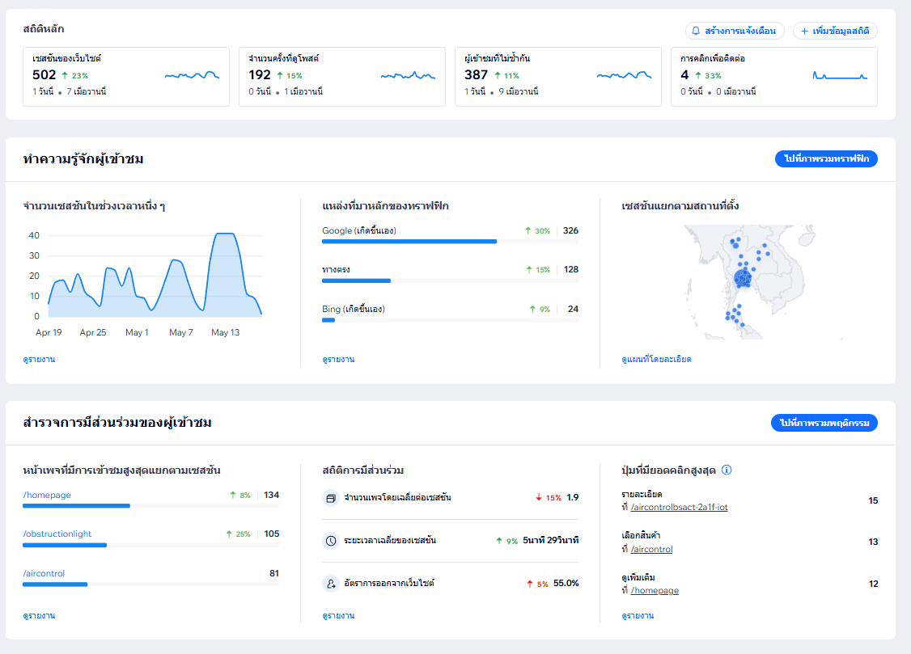
Process
Research & Planning
Analyzed technical standards, product workflows, and common customer confusion points to improve product communication.
3D Modeling
Created optimized 3D assets that balanced technical accuracy with real-time web performance.
GLB Export
Reduced model complexity and optimized GLB exports to improve loading speed across devices.
UX/UI Design
Designed a technical UX system focused on readability, product clarity, and industrial usability.
Development
Developed interactive product systems including real-time viewers, product guidance logic, and structured technical content.
Launch
Launched an interactive technical platform designed to improve customer understanding and product accessibility.
Screenshots
Selected interface views and interactive systems developed for the BSE technical visualization platform.
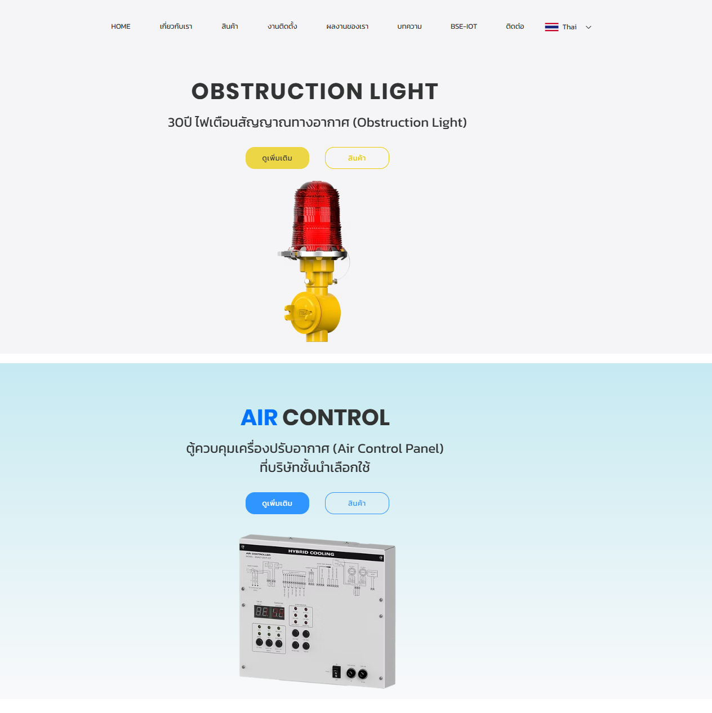
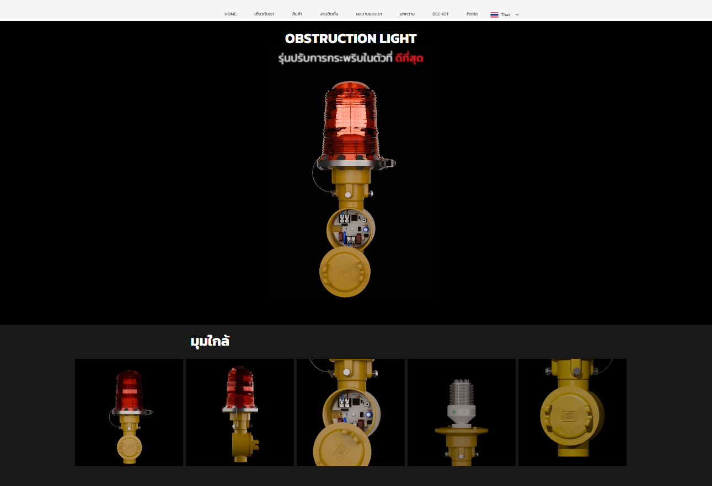
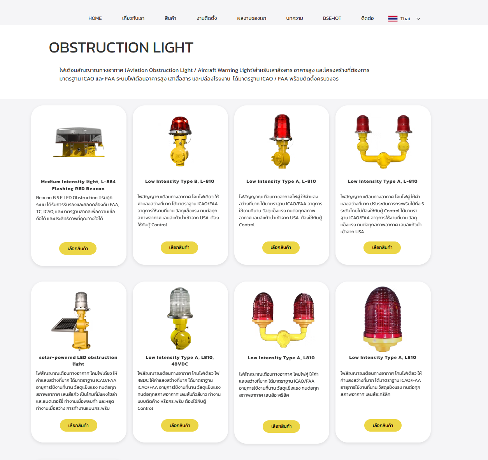
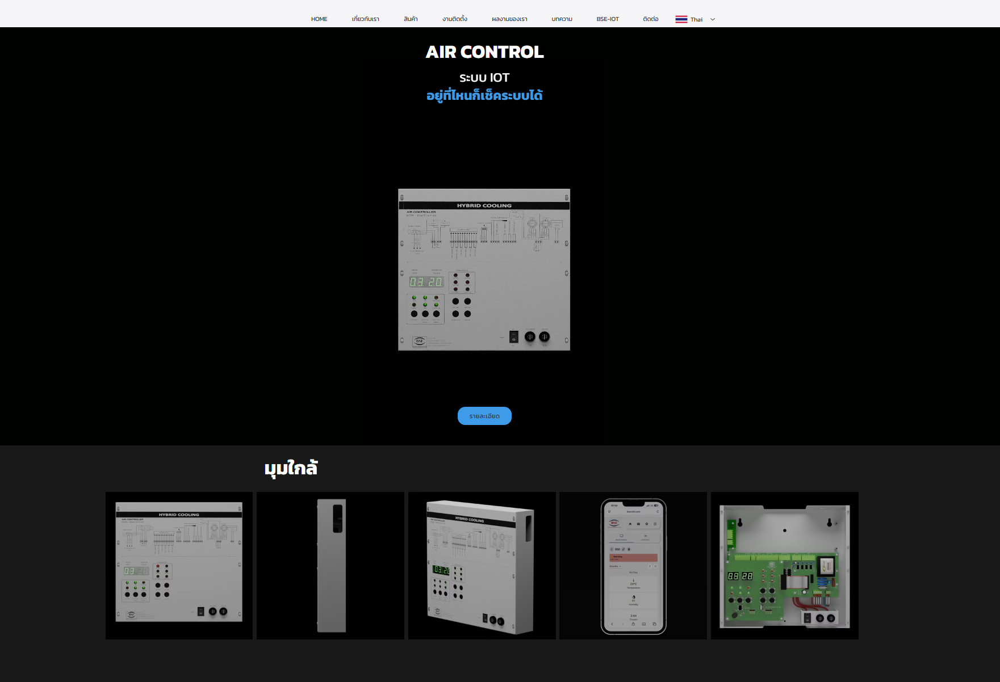
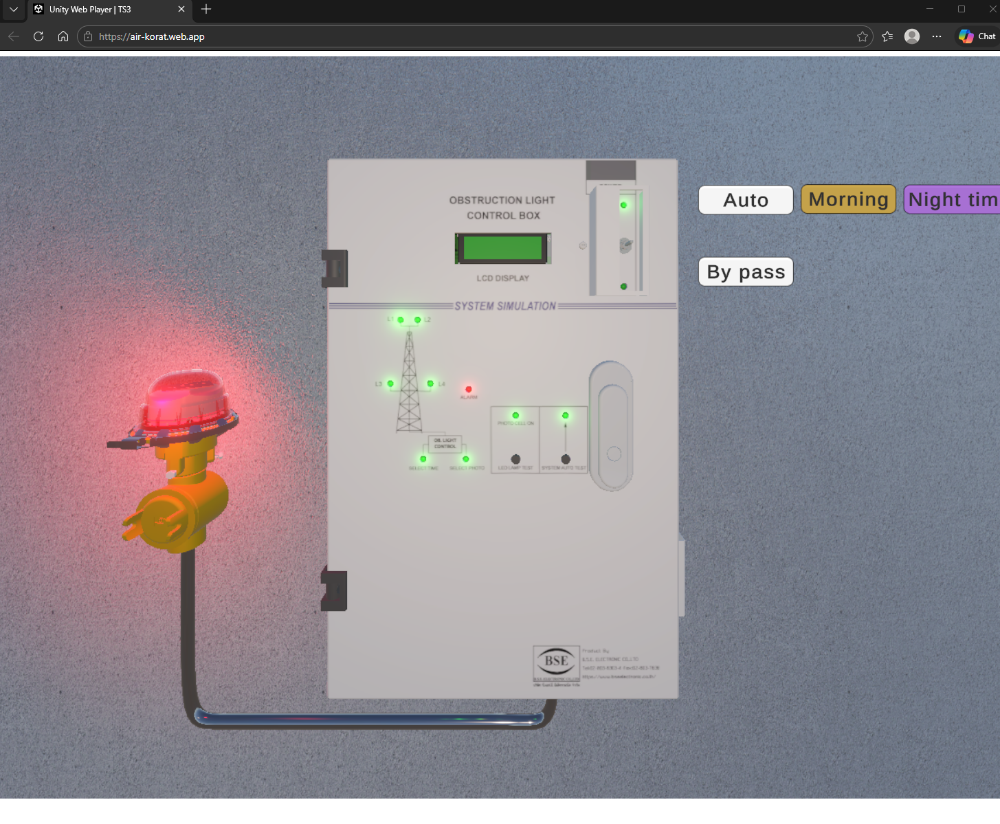
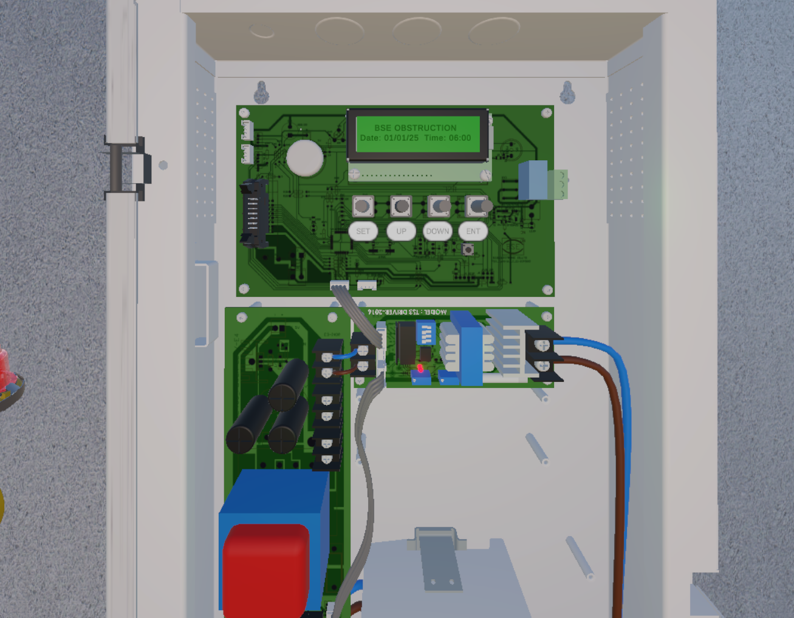
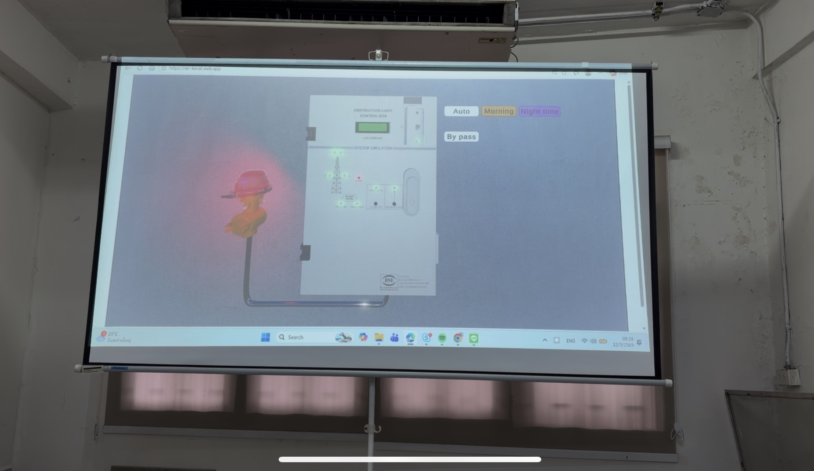
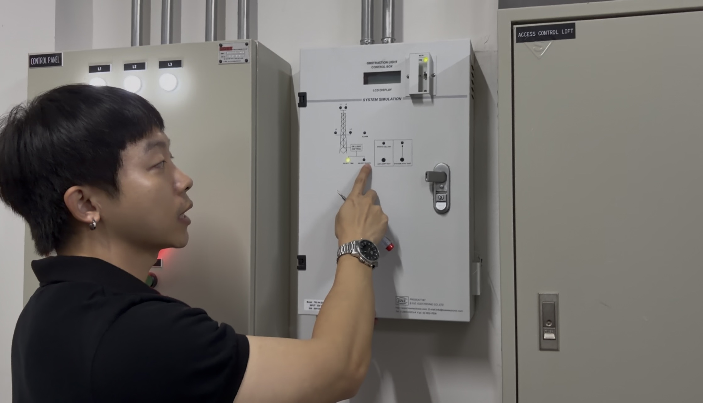
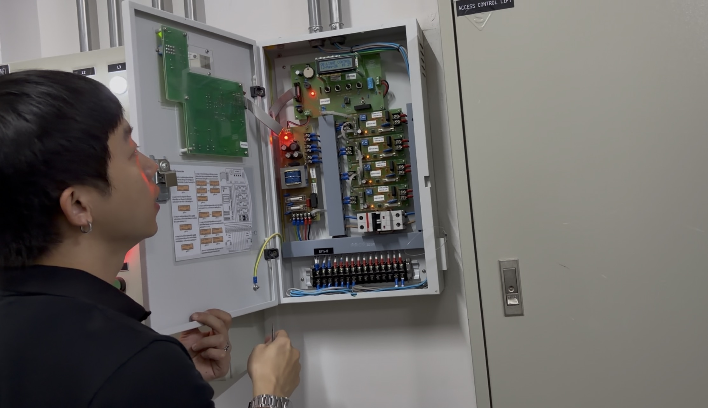
Stack & Tools
3D Product Visualization
Web-optimized 3D delivery
Real-time browser 3D
Content management
Custom embedded code
Aviation standard reference
Experience the Platform
The complete platform is live and in use by BSE Electronic.